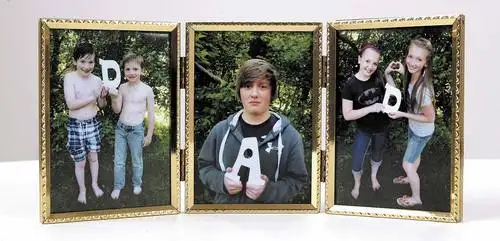
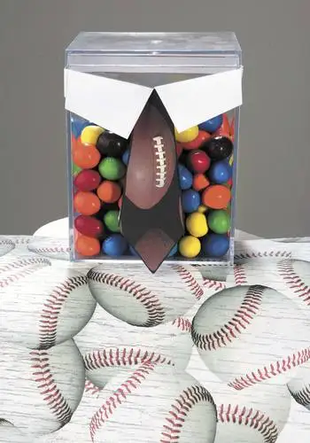

Happy Father’s Day 2012! (Okay, one day late…) Hope you dads had a relaxing, special day with your families.
Starting a new job this week translated, for me, into haphazard Father’s Day plans, but thanks to one of the last feature stories I did for the newspaper, I had some things in the bag.
Including this framed DAD photo craft:
 |
| Dave Wallis/The Forum |
{kind=link}
And this tie box filled with a colorful assortment of M&MS:
 |
| Dave Wallis/The Forum |
{kind=link}
The lackadaisical day landed us at Famous Dave’s closer to 1 than noon. Here’s most of the troop prior to mealtime:
{kind=link}
And after being refreshed with drinks:
{kind=link}
When a dad spends his special day painting, I’m not sure it can be called relaxing, but we now have a fresh coat of color on our family room walls and we’re ever so thankful. (Does it help knowing that in the past, I’ve done all the interior painting? It’s good to share, right?)
{kind=link}
All in all, Father’s Day seems to have gone off well. But let me reverse now and catch you all up with the rest of Peace Garden Mama’s comings and goings.
First, Friday was our middles kids’ piano recital at the chapel at the Riverview Retirement Center:
{kind=link}
In waiting mode here are two of the Salonens. Their musicianship was a joy to us:
{kind=link}
And then on Saturday, middle girl and I went on a road trip, my first outing for my new job. We took in a 125th Anniversary Mass at a church up in Carrington, ND, not far from where my own father started his life in New Rockford, ND.
Aside from the work, we were able to capture a few images I’m happy to have as reminders of our out-of-town adventure, including our breeze-by visit to the Chieftain Motel…
{kind=link}
…our sights set on the statue where my sister and I used to plant ourselves around 35 years ago. This time, my daughter did the planting of bottom to moccasin:
{kind=link}
We also caught a glimpse of this exquisite rose:
{kind=link}
And this equally mesmerizing sunset:
{kind=link}
I’m finding myself in the midst of a good change, and knowing I’m in a particularly blessed phase in my life. Gratitude is a word I’m hanging around with a lot these days.
Q4U: What word would define your summer so far?
{kind=link}